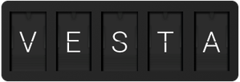

Vesta
Vesta is a Vestaboard client library for Python. It provides an API client and character encoding utilities.
Installation
Vesta requires Python 3.6 or later. It can be installed via PyPI:
$ python -m pip install vesta
It’s only runtime dependency is the Requests library, which will be installed automatically.
API Client
- class vesta.Client(api_key: str, api_secret: str, *, base_url: str = 'https://platform.vestaboard.com', headers: Optional[Mapping[str, str]] = None)
Provides a Vestaboard API client interface.
Credentials must be provided as an
api_keyandapi_secret.Optional, an alternate
base_urlcan be specified, as well as any additional HTTPheadersthat should be sent with every request (such as a custom User-Agent header).- post_message(subscription_id: str, message: Union[str, list]) Dict[str, Any]
Post of a new message to a subscription.
The authenticated viewer must have access to the subscription.
message can be either a string of text or a two-dimensional array of character codes representing the exact positions of characters on the board.
If text is specified, lines will be centered horizontally and vertically if possible. Character codes will be inferred for alphanumeric and punctuation, or can be explicitly specified in-line in the message with curly braces containing the character code.
Character Encoding
All Vestaboard characters (letters, numbers, symbols, and colors) are encoded as integer character codes. Vesta includes some useful routines for working with these character codes.
- class vesta.Color(value)
Bases:
enum.IntEnumColor chips
- BLACK = 0
- BLUE = 67
- GREEN = 66
- ORANGE = 64
- RED = 63
- VIOLET = 68
- WHITE = 69
- YELLOW = 65
- vesta.encode(s: str) List[int]
Encodes a string as a list of character codes.
In addition to printable characters, the string can contain character code sequences inside curly braces, such as
{5}or{65}.- Raises
ValueError – if the string contains unsupported characters or codes
>>> encode("{67} Hello, World {68}") [67, 0, 8, 5, 12, 12, 15, 55, 0, 23, 15, 18, 12, 4, 0, 68]
- vesta.encode_row(s: str, align: str = 'left', fill: int = Color.BLACK) List[int]
Encodes a string as a row of character codes.
In addition to printable characters, the string can contain character code sequences inside curly braces, such as
{5}or{65}.aligncontrols the text’s alignment within the row: left, right, or center. Thefillcharacter code (generally aColor) is used to fill out any additional space.- Raises
ValueError – if the string contains unsupported characters or codes, or if the resulting encoding sequence would exceed the maximum number of supported columns
>>> encode_row("{67} Hello, World {68}", align="center") [0, 0, 0, 67, 0, 8, 5, 12, 12, 15, 55, 0, 23, 15, 18, 12, 4, 0, 68, 0, 0, 0]
- vesta.encode_text(s: str, align: str = 'left', margin: int = 0, fill: int = Color.BLACK, breaks: AbstractSet[int] = frozenset({0})) List[List[int]]
Encodes a string of text into rows of character codes.
In addition to printable characters, the string can contain character code sequences inside curly braces, such as
{5}or{65}.aligncontrols the text’s alignment within the row: left, right, or center. margin specifies the width (in columns) of the left and right margins. Thefillcharacter code (generally aColor) is used to fill out any additional space.breaksis the set of character codes used to compute line breaks. If a line of text won’t fit in the available columns, it will be “broken” at the first preceding break character, and the remaining characters will continue on the next row (potentially subject to additional breaks). If a break cannot be found, the line will be broken at the column limit (potentially mid-“word”).- Raises
ValueError – if the string contains unsupported characters or codes, or if the resulting encoding sequence would exceed the maximum number of supported rows
- vesta.pprint(data: Union[List[int], List[List[int]]], stream: TextIO = <_io.TextIOWrapper name='<stdout>' mode='w' encoding='utf-8'>, *, sep: str = '|', block: str = '◼︎')
Prints a console-formatted representation of encoded character data.
datamay be a single list or a two-dimensional array of character codes.>>> pprint([67, 0, 8, 5, 12, 12, 15, 55, 0, 23, 15, 18, 12, 4, 0, 68]) |◼︎| |H|E|L|L|O|,| |W|O|R|L|D| |◼︎|
Message Posting
Messages can be posted (using vesta.Client.post_message()) as either
text strings or two-dimensional arrays of character codes representing the
exact positions of characters on the board.
If text is specified, lines will be centered horizontally and vertically if
possible. Character codes will be inferred for alphanumeric and punctuation, or
can be explicitly specified in-line in the message with curly braces containing
the character code (such as {5} or {65}).